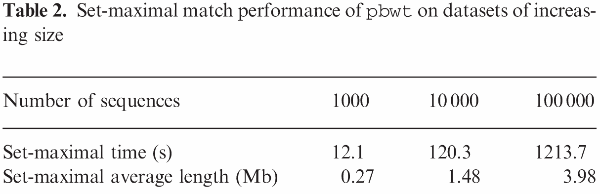

Author: Richard Durbin
Iqbal Group Journal Club
Strong compression of haplotype data
Speed up haplotype matching by factor of $M$
Compress haplotype data up to 100 times more
than gzip
Find all set-maximal matches at position in linear time $O(NM)$ and then for new sequence(s) in $O(N)$*
* Provided the index array fits in memoryProvides efficient framework for seed matching by statistical genotyping algorithms
$a_k$ is an array containing the ordering of sequences for the given $k$
0011010 1 00
1111010 1 11
1111110 1 00
So here, $a_7 = [0,1,2]$
Whereas $a_9 = [0,2,1]$
$d_k$ is an array containing the "longest common prefix" at $k$.
0011010 1 00
1111010 1 11
1111110 1 00
So here, $d_7 = [0,2,5]$
You can see that at a given $k$ the sequences with the longest match up to $k-1$ will cluster together.
0011010 1 00
1111010 1 11
1111110 1 00
In the below example, $y_0$ and $y_1$ are not
0011010 1 00
1111010 1 11
1111110 1 00
The match can be extended...
In the below example, $y_0$ and $y_1$ are not
00110101 0 0
11110101 1 1
11111101 0 0
The match can be extended...
A
00110101 0 0
11110101 1 1
11111101 0 0
u,v = 0
p,q = k+1
a,b,d,e = []
for i in range(M):
if d_k[i] > p:
p = d_k[i]
if d_k[i] > q:
q = d_k[i]
if y[i][k] == 0:
a[u] = a_k[i]
d[u] = p
u += 1
p = 0
elif y[i][k] == 1:
b[v] = a_k[i]
e[v] = q
v += 1
q = 0
return a + b, d + e
Sequences with matches larger than a given $L$ will occur in blocks - separated by blocks where it isn't ($d_{k}[i]>k-L$)
Therefore just need to keep track of last time $d_{k}[i] > k - L$
This is implemented in Algorithm 3
and runs in $O[max(NM, matches)]$
Can be done in the same sweep to calculate $a$ and $d$
Given previous methods, for any sequence $y_i$ at position $k$, it's set-maximal match must be immediately prior or following.
Find your interval of longest matches at $k$ - Algorithm 3
If $y_j[k] \neq y_i[k]$ then this is set-maximal.
Otherwise, the match can be extended and is therefore not set-maximal.
Runs in $O(NM)$ - Algorithm 4
Implemented in Algorithm 5 is a way to determine the set-maximal matches of a new sequence(s).
This can be done in $O(N)$
I can't quite follow how the algorithm works.
Storing $a_k$ and $d_k$ for all $k$ would use more space than the original binary data.
Not needed all the time, but are needed if wanting to analyse a new sequence.
Because there is long stretches of identical values in the sequences the PBWT should be storable in smaller-than-original space.
Could be even more space-efficient by storing only a subset of the $a$ and $d$ arrays, say every 32 or 64 positions.
Makes mention of scope for improving storage of $d$ using Huffman coding.
Non-linear benefit for compression as $M$ increases.
 Clearly demonstrates the linear time to find set-maximal matches.
Indexed takes constant time up until the point where it runs out of memory.
“I therefore conclude that the PBWT-based approach can be hunreds of times faster than a direct search approach and find matches in time independent of the reference panel size, as conjectured above, so long as the associated index arrays fit in memory.”
“Although the algorithms are presented for binary data, they can be extended to multi-allelic data with a little care.”
All algorithms require exact matching.
Could use as a seeding method for statistical
genotype algorithms.
Mentions possible speedup to BEAGLE
More direct approach would be to work from both ends of the sequences.
At some point $k$ we have information about matches in both directions.
Can then assign alleles for all sequences at $k$ before moving to next $k$
Series of algorithms to generate prefix array data structures for haplotype sequences and for strong compression.
Removes factor of $M$ for search time of new sequences. Allowing matches for ten's of thousands of sequences in minutes.
Importantly, this could provide a
way of storing linkage information for a genome graph.
As this can be challenging due to memory limitations.